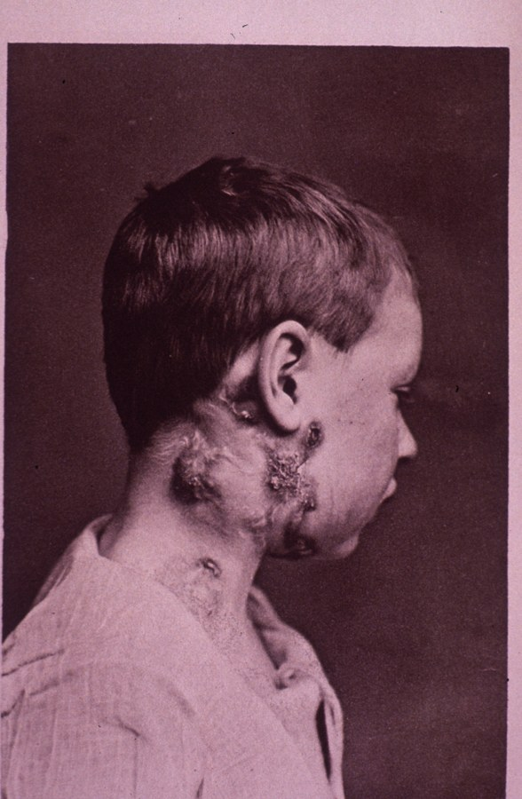
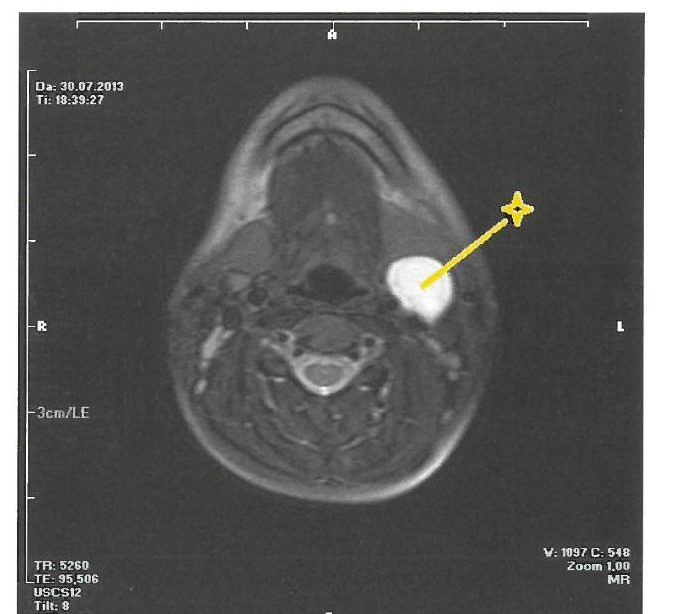
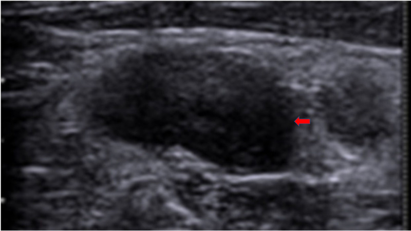
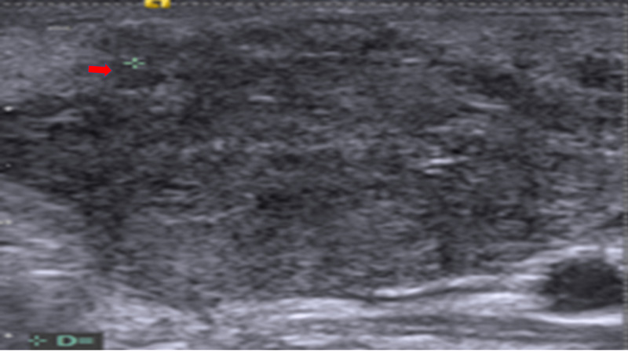

| Konu | Boyun kitlelerine yaklaşım — ayırıcı tanı, görüntüleme ve biyopsi kararı |
|---|---|
| Sistem | Baş-boyun — servikal bölge |
| Süre | ~75 dakika |
| Ana kaynak | Önerci Cilt 5, Bölüm 12 (b.133-138) |
| Ek | Önerci Cilt 5 böl. 49 (b.571-578, konjenital kitleler) · Koç C b.855 · ASCO 2020 kılavuzu |
“Boynumda şişlik var” cümlesinin arkasında basit bir reaktif lenf nodundan doğumsal bir kiste, tiroid nodülünden metastatik bir kansere kadar son derece geniş bir yelpaze saklanır. Asıl beceri kitleyi görmek değil — yaşı, süreyi ve muayene bulgularını kullanarak bu yelpazeyi hızla daraltmak ve “boyundan açık biyopsi ne zaman doğru, ne zaman yanlış” sorusunu doğru yanıtlamaktır.
Boyun kitlesi, boyun bölgesinde palpe edilebilen veya görülebilen her türlü şişliği kapsayan geniş bir klinik başlıktır. Genel olarak üç ana grupta sınıflanır: inflamatuar/enfeksiyöz, konjenital ve neoplastik. Bu kitlelerin sıklığı ve tipleri pediatrik (0-18 yaş) ve yetişkin (>18 yaş) gruplarında belirgin farklılık gösterir.
Konunun önemi üç noktada toplanır:
Boyun kitlesiyle gelen hastada zihindeki sıra şu olmalı: (1) Hastanın yaşı ve kitlenin süresi/büyüme hızı hangi kategoriyi öne çıkarıyor? (2) Muayene ve görüntüleme bulguları benign mi malign mi işaret ediyor? (3) Tanı için doğru yöntem hangisi — ince iğne aspirasyon biyopsisi mi, yoksa (yalnızca seçilmiş durumlarda) açık biyopsi mi?
Boyunda yaklaşık 300 adet lenf nodu bulunur; yüzeyel ve derin lenf nodu grupları şeklinde sınıflandırılır. Boyun diseksiyonu kavramı içerisinde esas hedef derin lenf nodu gruplarıdır. Servikal lenf nodu seviyeleri (Robbins/AAO-HNS sınıflaması, I-VII) rastgele değil, belirli anatomik yapılarla sınırlanır — iki yatay düzlem (hyoid, krikoid) ve birkaç kas/damar/sinir tüm sınırları belirler.
| Sınır | Ayıran yapı |
|---|---|
| Seviye I üst sınırı | Mandibula alt kenarı |
| IA (submental) ↔ IB (submandibular) | Digastrik ön karnı |
| Seviye I ↔ II | Submandibular bez arka kenarı / stilohyoid-digastrik arka karnı |
| Seviye II ↔ III | Hyoid kemik (alt kenar, yatay düzlem) |
| IIA ↔ IIB | Spinal aksesuar sinir (XI) |
| Seviye III ↔ IV | Krikoid kıkırdak (alt kenar, yatay düzlem) |
| Seviye II-III-IV ↔ V | SKM'nin arka kenarı |
| VA ↔ VB | Krikoid düzlemi (yatay) |
| Seviye V arka sınırı | Trapez kasının ön kenarı |
| Seviye VI (santral) yan sınırı | Ana karotis arterleri; üst: hyoid, alt: suprasternal çentik |
| Seviye VI ↔ VII | Suprasternal çentik (altı = üst mediasten = VII) |
| Seviye | Bölge | İçindeki yapılar / nodlar |
|---|---|---|
| I | Submental (IA) + submandibular (IB) | Submandibular bez, digastrik ön karın; submental ve submandibular nodlar |
| II | Üst juguler | İJV üst kısmı, spinal aksesuar sinir (IIA/IIB'yi ayırır), parotis kuyruğu komşuluğu; jugulodigastrik nod |
| III | Orta juguler | İJV orta kısmı, karotis kılıfı (ana karotis + vagus), omohyoid çaprazı |
| IV | Alt juguler | İJV alt kısmı, ana karotis, solda torasik kanal, frenik sinir |
| V | Posterior üçgen (VA üst / VB alt) | Spinal aksesuar sinir seyri, transvers servikal arter; VB'de supraklaviküler nodlar |
| VI | Santral / ön kompartman | Tiroid bezi, larenks, trakea, özefagus, rekürren laringeal sinirler, paratiroidler; prelaringeal (Delphian) nodlar |
| VII | Üst mediasten | Üst mediastinal nodlar; büyük damarlar, rekürren laringeal sinir seyri |
Boyun kitlelerinin ayırıcı tanısında hikaye çok önemlidir. Birkaç gündür olan, ağrılı ve üst solunum yolu enfeksiyonu eşlik eden kitlelerde öncelikle lenfadenitler düşünülmelidir. Bazı spesifik enfeksiyonlarda (tüberküloz lenfadenit, tularemi vb.) uzun süreli bir hikaye olabileceği unutulmamalıdır. İki haftadan uzun süren, sert, fikse kitlelerde özellikle yetişkinlerde malignite düşünülmelidir.
Lokalizasyon da yönlendirir: enfeksiyöz kökenli olanlar submandibüler ve üst servikal seviyelerde (spesifik enfeksiyonlar hariç), konjenital olanlar orta hatta (brankial anomaliler kaslar arasında), yetişkin metastatik malign kitleler seviye II-III düzeylerinde (nazofarenks kanseri metastazı V. bölgede) yerleşir; tiroid ve tükürük bezi kitleleri ilgili lojlarda görülür.
| Kategori | Örnekler |
|---|---|
| İnflamatuar / enfeksiyöz | Reaktif servikal lenfadenit (viral/bakteriyel) · derin boyun enfeksiyonu (bkz. Gün 18) · tüberküloz servikal lenfadenit (skrofula) · tularemi · enfeksiyöz mononükleoz |
| Konjenital | Tiroglossal duktus kisti (en sık) · brankial anomaliler (Tip I-IV) · timik kistler · teratom ve dermoid kist · hemanjiom · lenfanjiyom (kistik higroma) · laringosel |
| Neoplastik | Tiroid kitleleri (en sık malign neden) · metastatik lenf nodları · tükürük bezi tümörleri · lenfoma |
Çoğunlukla üst solunum yolu enfeksiyonu kökenlidir. Ağrılı, hassas, hiperemik ve birkaç gündür var olan kitleyle başvuran hastalarda tam bir KBB muayenesi yapılmalıdır. Reaktif servikal lenfadenit viral veya bakteriyel kaynaklı olup genellikle oral kavite ve orofarenks enfeksiyonlarına (tonsillit, farenjit, adenoidit, diş enfeksiyonları) sekonder oluşur; çocuklarda sıktır. Derin boyun enfeksiyonları (peritonsiller, parafarengeal, retrofarengeal apse, Bezold apsesi) ayrı ve önemli bir başlıktır — mediastinite kadar yayılabilen, mortalite riski taşıyan tablolardır; ayrıntısı Gün 18'de.
Tüberküloz servikal lenfadenit (skrofula) son yıllarda ülkemizde nadir olmayan sıklıkta görülmekte; ayırıcı tanıda kesinlikle unutulmamalıdır — en az birkaç haftalık (bazen ayları bulan) hikaye, ağrılı veya ağrısız, iyi sınırlı veya yaygın olabilir.

Tiroglossal duktus kisti, tiroid bezinin embriyolojik gelişimindeki hatadan kaynaklanır; en sık hyoid kemik üzerinde veya hemen altında, orta hatta, ağrısız/mobil/yumuşak bir kitle şeklinde görülür. Yutkunma sırasında veya dil dışarı çıkarıldığında hyoid kemikle ilişkisi nedeniyle yukarı hareket etmesi tanısal bir bulgudur. Standart cerrahi tedavi, kist ile birlikte hyoid korpusunun orta kısmının da çıkarıldığı Sistrunk ameliyatıdır — yalnızca kist eksizyonu yüksek nüks oranı taşır.

Brankial anomaliler (en sık ikinci brankial anomali) fistül, sinüs veya kist şeklinde ortaya çıkabilir; sıklıkla boyun 2. ve 3. bölgelerini kaplayan, hastanın herhangi bir nedenle (genellikle enfeksiyon) hekime başvurmasına neden olan kitledir. Klasik tedavisi cerrahi eksizyondur; kitle traktı ile birlikte eksize edilmelidir, aksi halde rekürrens sık görülür.

Anamnezde sorgulanacaklar: kitlenin ne zamandır var olduğu, büyüme hızı, ağrı, ateş/sistemik semptom, sigara-alkol öyküsü, baş-boyun kanseri aile öyküsü, son geçirilen ÜSYE, ses kısıklığı/yutma güçlüğü/kilo kaybı gibi eşlik eden şikâyetler. Muayenede inspeksiyon ve palpasyon, üst solunum yolu enfeksiyonuna eşlik eden lenfadenitte genellikle yeterlidir.
| Özellik | Benign / reaktif lehine | Malign lehine |
|---|---|---|
| Kıvam | Yumuşak, elastik | Sert, taş sertliğinde |
| Hassasiyet | Ağrılı (enfeksiyon) | Ağrısız |
| Hareketlilik | Mobil, kaygan | Fikse (dokuya/cilde yapışık) |
| Sınır | Düzgün, ayrık | Düzensiz, birbirine yapışık (matting) |
| Süre / seyir | Akut, kısa sürede geriler | Giderek büyüyen, >3-4 hafta sebat eden |
| Boyut | <1 cm (çoğu bölgede) | >1,5-2 cm, giderek büyüyen |
Sert + ağrısız + fikse + giderek büyüyen nod = aksi ispat edilene dek malign. Supraklaviküler nod (özellikle sol = Virchow nodu) → toraks/abdomen malignitesi açısından uyarıcı. Erişkinde açıklanamayan, sebat eden boyun kitlesinde önce malignite dışlanmalı; nazofarenks, orofarenks, larenks, tiroid ve tükürük bezleri taranmalı.
Boyun lenf nodlarının ayırıcı tanısında ultrason bulguları önemlidir ve gerektiğinde iğne biyopsisi yapılabilir. Çoğunlukla kitlenin lokalizasyonunun tespitiyle tanıya ulaşmak mümkündür: tiroid ve tükürük bezi malignitelerinde önce fizik muayene ile ön tanı, ardından ultrason ve ince iğne aspirasyon sitolojisi ile kesin tanı ve cerrahi planlama yapılabilir.
Lenfomada muayene bulguları oldukça spesifiktir: lastik kıvamında, konglomere ve elastik kitleler boyunda her seviyede (çoğunlukla üst juguler veya submandibüler bölgede) yerleşir.
Sitolojik inceleme malign olarak rapor edilir ve primer tümör lokalizasyonu tespit edilemezse kitle “primeri bilinmeyen boyun kanseri” olarak kabul edilir. Bu durumda iki temel tetkik uygulanır: (1) kontrastlı baş-boyun BT'si (kafa kaidesinden supraklaviküler bölgeye kadar, nazofarenks-orofarenks-hipofarenks-larenks içerecek şekilde), (2) ince iğne aspirasyon biyopsisi. Endoskopik muayene ve görüntüleme ile büyük çoğunlukla primer odak tespit edilebilir.
Görüntüleme yöntemi olarak ultrason, BT ve MR kullanılabilir. Boyun kitlesi üst solunum yolu enfeksiyonuna eşlik ediyorsa görüntülemeye gerek yoktur; derin boyun enfeksiyonu varsa ultrason veya BT, apse varlığını ve yayılımı göstermede kullanılır. Neoplastik veya konjenital kitleler için ultrasonla birlikte BT ve MR elde edilebilir — buradaki önemli nokta, ayırıcı tanıda kullanılan görüntülemenin kontrastlı olmasıdır.
Ultrason, tükürük bezi ve tiroid bezi kitlelerinde vazgeçilmezdir; eş zamanlı iğne aspirasyon biyopsisi de yapılabilir.
| USG bulgusu | Benign / reaktif | Malign lehine |
|---|---|---|
| Şekil (S/L oranı) | Oval, uzun; S/L < 0,5 | Yuvarlak; S/L > 0,5 |
| Hilus (yağlı hilum) | Var (ekojen santral hilum) | Kayıp (tümör infiltrasyonu siler) |
| Sınır | Düzgün, iyi sınırlı | Düzensiz/bulanık; matting |
| İç yapı | Homojen | Heterojen, nekroz, kalsifikasyon |
| Doppler kanlanma | Hiler (santralden dağılan) | Periferik/kapsüler, düzensiz |


Bilgisayarlı tomografi. Malign lehine: santral nekroz (kontrast tutmayan hipodens merkez — en güvenilir BT bulgusu), >1-1,5 cm kısa aks, yuvarlaklaşma, hilus kaybı, kapsül dışı yayılım, matting. Benign lehine: homojen kontrastlanma, korunmuş yağlı hilus, oval şekil, düzgün kenar. BT ayrıca primer odağı ve seviye dağılımını gösterir (evreleme için).
MR yumuşak doku ve derin invazyonu daha iyi ayırır; parotis kitlelerinde tercih edilir (derin lob uzanımı ve lenf nodları hakkında bilgi verir). Tiroid kitlelerinde BT ancak kitle çok büyükse veya mediastene uzanım/boyunda metastatik LAP varsa istenir — avantajı, eş zamanlı çekilecek toraks BT'nin de bilgi verecek olmasıdır.
Tek bir bulgu (palpasyon, USG veya BT) benign/malign ayrımını kesinleştirmez — bulgular ve klinik birlikte değerlendirilir. Kesin tanı İİAB veya eksizyonel biyopsi + histopatoloji ile konur. Görüntüleme “kime, nereden biyopsi” sorusunu yönlendirir.
Tedavi, altta yatan etiyolojiye göre yönlendirilir: enfeksiyöz kitlelerde antibiyoterapi (± apse drenajı), konjenital kitlelerde cerrahi eksizyon (nüksü önlemek için traktla birlikte), neoplastik kitlelerde primer tanıya yönelik onkolojik tedavi.
Bu sorunun tek ve net cevabı boyundan açık biyopsi yapılamazdır — birkaç sınırlı istisna dışında. Üst aerodijestif sistem mukozasından ve tükürük bezlerinden köken alan epitelyal kanserlerde boyundaki metastatik lenf nodundan açık biyopsi yapılması yanlıştır. Bu nedenle malign epitelyal kanser sitolojik tanısı varsa biyopsiye gerek yoktur. Metastatik baş-boyun kanserlerinde boyundan açık biyopsi yapılması durumunda lokal-rejyonel nüksün artacağı ve yaşam beklentisinin azalacağına dair retrospektif çalışmalar mevcuttur.
Boyun kitleleri çocuklarda ve yetişkinlerde farklı değerlendirilmelidir. Enfeksiyonlardan ve konjenital kitlelerden benign-malign neoplazilere kadar geniş bir yelpaze söz konusudur. Klinik ve radyolojik bulgular tanı koydurucu ve çoğunlukla tedaviye yönlendiricidir. Neoplastik kitlelerde sitolojik tanı önemlidir; primeri bilinen kanserlerde ise sadece primerden biyopsi yapmak yeterlidir.
ASCO kılavuzu (2020) baş-boyunda primeri bilinmeyen skuamöz hücreli kanserde kontrastlı BT/MR ve PET-BT ile başlayan, panendoskopi + yönlendirilmiş biyopsilerle devam eden, negatif sonuçta ipsilateral tonsillektomi ve gerekirse dil kökü değerlendirmesiyle tamamlanan sistematik bir algoritma öneriyor. Maghami E, Ismaila N, Alvarez A ve ark. J Clin Oncol. 2020;38(22):2570-2596. doi:10.1200/JCO.20.00275
Dil kökü mukozektomisi (2024). Güncellenen sistematik derleme, TORS veya TLM ile yapılan dil kökü mukozektomisinin, negatif klinik/radyolojik iş-up sonrasında primer odağı saptama oranının %78-80 civarında olduğunu doğruladı — HPV-pozitif hastalıkta oran %80'i aşıyor. Wang D ve ark. Medicine (Baltimore). 2024;103(46):e40250. doi:10.1097/MD.0000000000040250
Kor iğne biyopsisi lenfomada. Servikal lenfadenopatide lenfoma tanısı için kor iğne biyopsisinin doğruluğunu değerlendiren meta-analiz, kor biyopsinin tanı ve alt tiplendirmede eksizyonel biyopsiye yakın başarı gösterdiğini bildirdi. Yine de kitaplardaki “lenfomada açık/eksizyonel biyopsi şart” ilkesi standart yaklaşım olmayı sürdürüyor; kor biyopsi, belirsiz kalan olgularda tamamlayıcı bir seçenek olarak değerlendiriliyor. Warshavsky A ve ark. Head Neck. 2020;42(10):3051-3060. doi:10.1002/hed.26381
Bu üç kaynak kitabın ilkelerini değiştirmiyor, keskinleştiriyor: “primer odağı ara” ilkesi artık PET-BT ve dil kökü mukozektomisini içeren tanımlı bir algoritmaya oturmuş durumda; bunun pratik karşılığı, primeri bilinmeyen olguyu ampirik boyun cerrahisine göndermeden önce bu basamakların tamamlanmış olması gerektiğidir. Lenfomada ise açık biyopsi kuralı hâlâ standart — kor biyopsi onu ikame etmiyor.
Görsel künyeleri: Servikal seviye şeması — Wikimedia Commons “Cervical lymph nodes and levels.png”, Mikael Häggström, CC0. Tiroglossal duktus kisti USG/BT — Bin Saeedan M ve ark., Insights into Imaging; Commons “Ultrasonography and CT of a thyroglossal duct cyst.jpg”, CC BY 4.0. Skrofula — Bramwell B, Atlas of Clinical Medicine, 1893, Plate II; Commons “Scrofula.jpeg”, kamu malı (notta kırpılmış ve küçültülmüş hali kullanıldı). Lenf nodu USG görüntüleri — Cureus 2020;12(8):e9819 (PMC7495950), CC BY 4.0. Brankial kleft kisti MRG — Önerci Cilt 5, Bölüm 49, s.574; kişisel çalışma notu kapsamında.
Notun sürümü: İlk üretim 11.08.2026 (4 görsel). Bu sürüm 25.08.2026'da görsel bütçesi kuralına
(SKILL.md §4) göre yeniden üretildi: 13 görsel — 7 çizim + 6 gerçek görüntü. Metin
içeriği korundu, güncel literatür bölümüne klinik çıkarım eklendi.